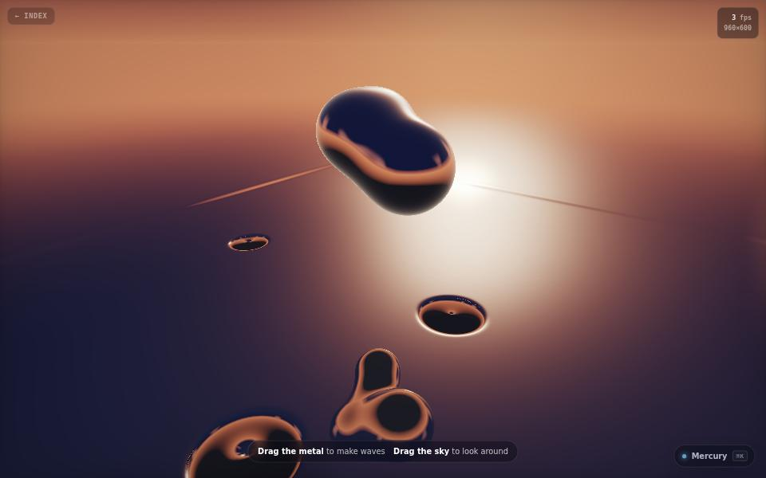

physics · about 3 min · The Workshop Shallows
Mercury
A sheet of liquid metal under a sunset sky. Drag it and the ripples bend the reflections as they spread.

The problem
A believable liquid-metal surface with no 3D model and no texture.
What it does
- Drag the metal to draw waves; drag the sky to look around
- Reflections bend as the ripples spread
- Measures its own frame rate and adapts
The most interesting decision
It watches its own frame rate
Every pixel is traced, twice where there is a reflection, so it measures frame time and asks for more or fewer pixels, with tests that stop it oscillating.
Built with
- WebGL fragment shader
- Wave equation
- Raymarched reflections
Evidence
Every pixel is worked out from scratch, every frame. Read its tests
Its world
A pool of liquid metal holding the sunset, rippling where you touched it.